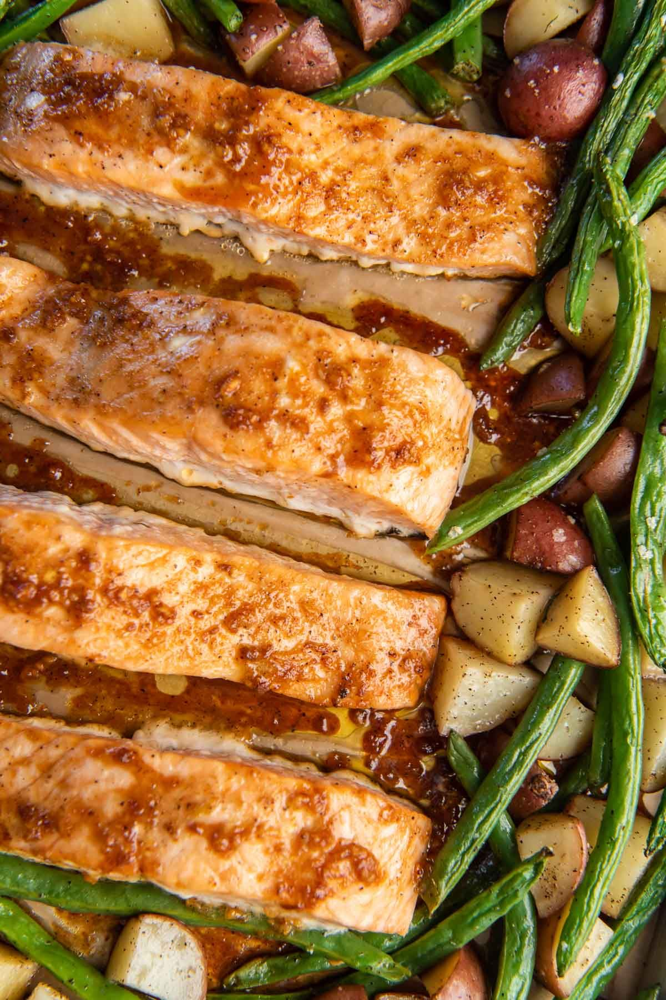

Honey Garlic Salmon

- Meal
- Dinner
- Serves
- 6
- Protein
- fish
- Cook
- oven · 10 min active / 30 min total · easy
- Make-ahead / leftovers
- no / yes
- Mediterranean
- yes
- WW tier
- light
- Status
- Trying out (probation)
Allergy: Contains fish or shellfish — not for a fish-allergic eater; plan a simple fish-free fallback
Sheet-pan, one-pan cleanup. The honey glaze makes this kid-approachable despite being fish.
Ingredients
- 1.5–2 lb salmon fillets (frozen is fine — budget pick at Aldi or Sam's)
- 3 tablespoons honey
- 3 cloves garlic, minced
- 2 tablespoons soy sauce
- 1 tablespoon olive oil
- 1 tablespoon lemon juice
- Salt and pepper
- Vegetables for the pan: broccoli florets, bell pepper, or green beans (about 3 cups)
Method
- Preheat oven to 400°F.
- Whisk together honey, garlic, soy sauce, olive oil, and lemon juice.
- Toss vegetables in a little olive oil, salt, and pepper. Spread on a lined sheet pan.
- Nestle salmon fillets among the vegetables. Spoon glaze over the salmon.
- Bake 20–25 minutes until salmon flakes easily and vegetables are tender.
Notes
- Buy frozen salmon fillets in bulk at Sam's; they thaw overnight in the fridge.
- Reduce garlic for picky kids, or serve the glaze on the side.
- This is the primary fish-night recipe — counts toward the weekly fish quota.
- Fish-free fallback: You're at the oven anyway — throw a chicken breast in a small dish with the same glaze, same temp, same time. One extra piece of chicken on the grocery list.